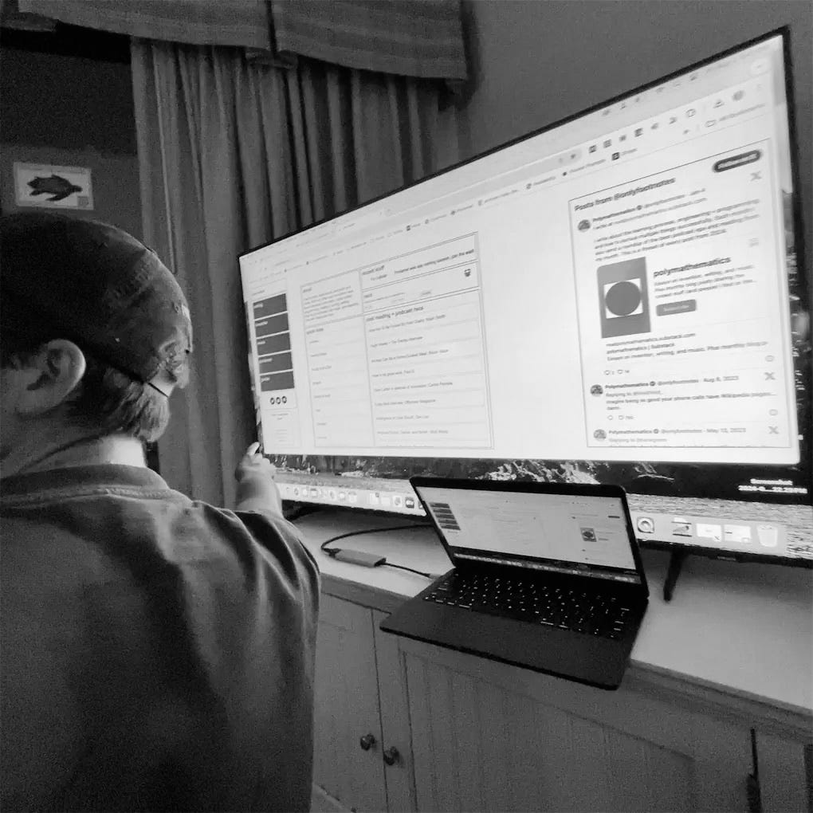

writing
The Internet Can Be a Telephone
the web should be a conversation, not a performance
published on 09.06.26jake weber

The internet can be a telephone.
These days a lot of the internet feels like eavesdropping or talking to a wall, but the best of the web feels like a conversation.
Here are some ways I try to make my experience of the web more like a phone call, a two-sided conversation.
Have a website, so others can know your vibe as a real person rather than just a profile on someone else’s site.
Find comment sections you actually engage with, whether that’s on your own site, Substack, Reddit, YouTube, or wherever else.
Open your inbox, email or DMs, to correspondence and actually reply, and reach out to others too.
When you like someone’s work, tell them, whether by leaving comments or emailing or DMing them.
And when you like someone’s work, tell other people as well, by retweeting, making curated blog posts, or sharing lists of your favorite documents.
Work with your door open by posting process photos and asking for advice.
Interview people you admire, just because.
Turn your mutuals into real friends, and introduce people to one another. I find making the leap from DMs or email to video calls super worthwhile.
Host or attend events in the real world so that the internet and real world start to merge.
And above all, be earnest and thoughtful online, resist the incentives to dehumanize.
I have a lot of connected thoughts around this topic, especially the items that touch on curation. I think we have a duty as users of the web to surface the best things we find while exploring it. More to come here.
And in the spirit of this post, leave a comment or shoot me an email <3
comments